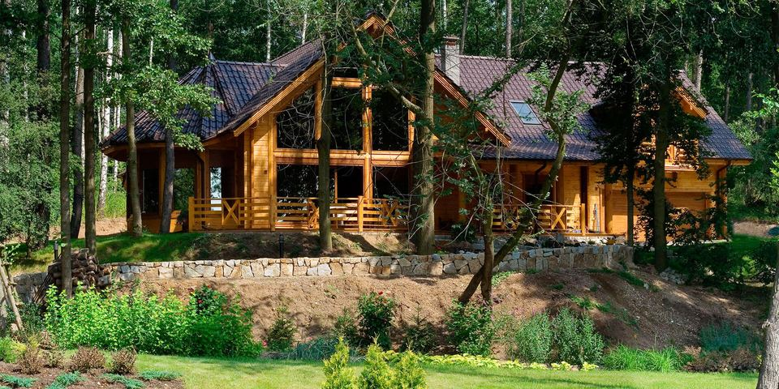
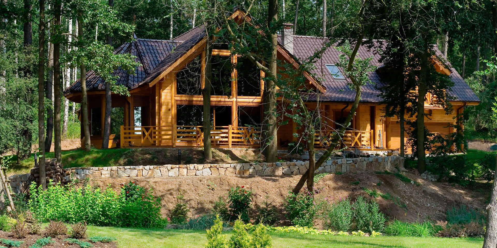
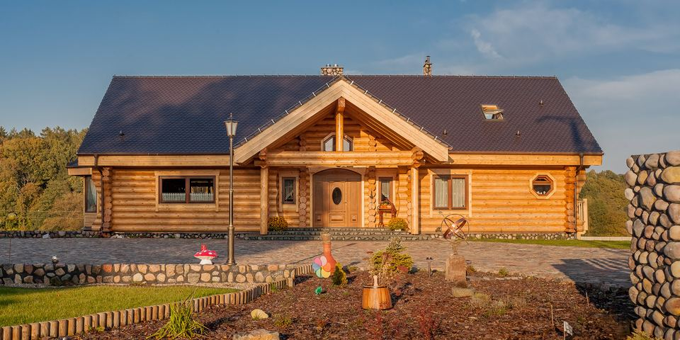
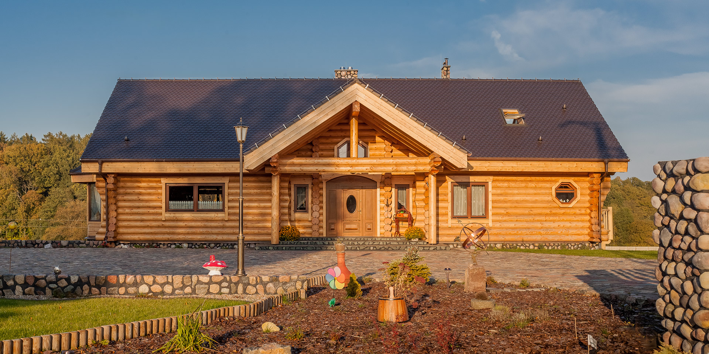
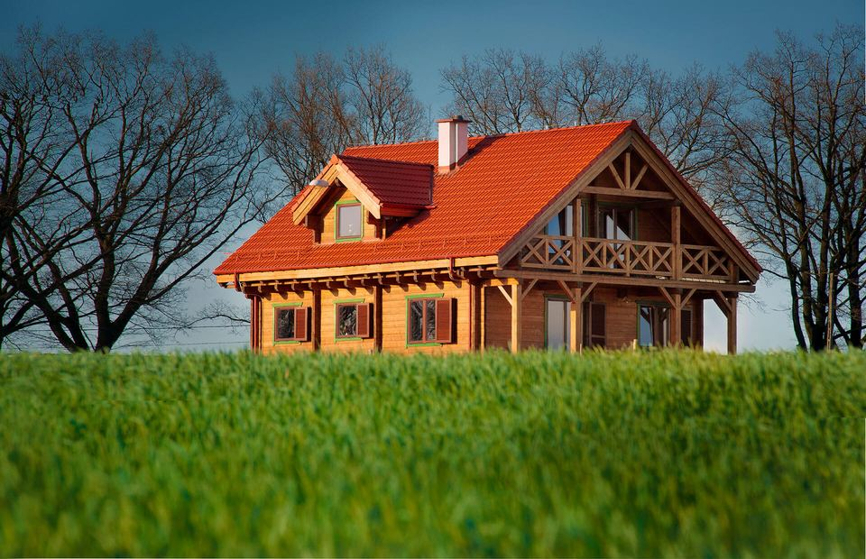
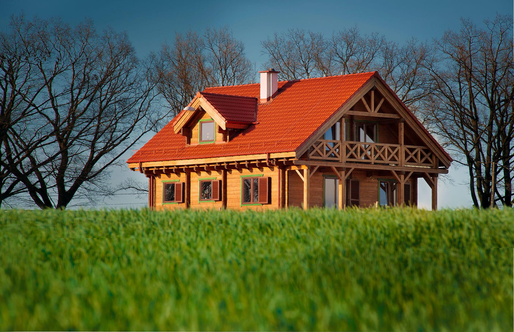
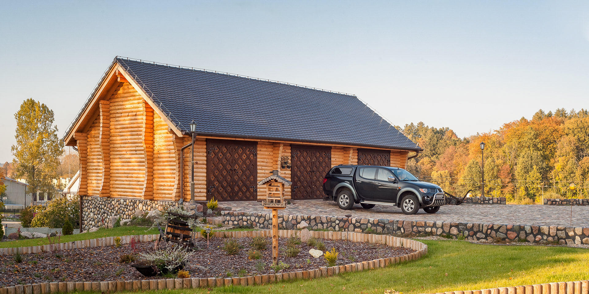

Przesun suwak w lewo i w prawo. Po prawej jest wersja "na telefon" - najmocniej zmniejszona, wiec jesli tu nie widac roznicy, w zestawie A tym bardziej jej nie bedzie.







| plik | wymiary | dzis | A pelny | B telefon | B WebP |
|---|---|---|---|---|---|
| wako-domyzbali-wagrowiec.jpg | 1920x960 | 642 | 551 | 156 | 160 |
| bozena-dom-panorama-2-slider.jpg | 1920x960 | 640 | 369 | 98 | 86 |
| wako-domzbali-gardeja.jpg | 1920x1241 | 569 | 432 | 130 | 115 |
| wako-garazezbali.jpg | 1920x960 | 448 | 377 | 104 | 95 |
| wako-domyletniskowe-krag.jpg | 1920x986 | 425 | 302 | 89 | 73 |
| 1.jpg | 1500x1000 | 349 | 310 | 164 | 151 |
| wako-domyzbaliprostokatnych-Piotr.jpg | 2102x1051 | 349 | 278 | 73 | 54 |
| Piotr180-10.jpg | 1042x694 | 345 | 223 | 179 | 173 |
| krag-6.jpg | 1500x1001 | 227 | 198 | 94 | 71 |
| Baltyk-1.jpg | 1500x1000 | 210 | 210 | 110 | 89 |
| MG_1624-H-800-3.jpg | 500x321 | 149 | 47 | 47 | 45 |
| dabrowa-800.jpg | 500x321 | 120 | 41 | 41 | 35 |
| zlocieniec-800-2.jpg | 500x321 | 107 | 35 | 35 | 28 |
| LOGO_WAKO-png2-1080x302.png | 1080x302 | 75 | 75 | 75 | 27 |
| LOGO_WAKO-png2-1024x286.png | 1024x286 | 69 | 69 | 69 | 25 |
| slide333.jpg | 500x321 | 62 | 39 | 39 | 34 |
| LOGO_WAKO-png2-768x215.png | 768x215 | 44 | 44 | 44 | 19 |
| LOGO_WAKO-png2.png | 1187x332 | 23 | 23 | 23 | 19 |
| MG_1624-H-800-3-300x193.jpg | 300x193 | 18 | 18 | 18 | 15 |
| dabrowa-800-300x193.jpg | 300x193 | 18 | 17 | 17 | 13 |
| slide333-300x193.jpg | 300x193 | 17 | 16 | 16 | 13 |
| zlocieniec-800-2-300x193.jpg | 300x193 | 15 | 14 | 14 | 10 |
| LOGO_WAKO-png2-300x84.png | 300x84 | 11 | 11 | 11 | 6 |
| cropped-LOGO_WAKO-png-192x192.png | 192x192 | 6 | 6 | 6 | 4 |
| razem | 4937 | 3705 | 1651 | 1360 |